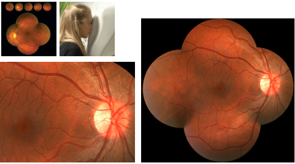

Model: ORION Hãng Sản xuất: NIDEK – Nhật Bản
 Máy
chụp hành khảo sát đáy mắt ORION AutoRetinal Imager là một trong những dòng
sản phẩm đầu tiên của Nidek dược ứng dụng công nghệ AutoEase. Thiết bị không
dãn đồng tử tự động này rất ít đòi hỏi sự can thiệp của người sử dụng để
thao tác chụp ảnh khảo sát. ORION rất dễ sử dụng. Chỉ cần hướng máy vào bệnh
nhân, bệnh nhân thao tác theo hướng dẫn bằng lời thoại để chụp ảnh khảo sát,
sau đó kết hợp các ảnh chụp đáy mắt khác nhau để phân tích. Máy ORION có sẵn
đường truyền kết nối với máy tính để tự động chụp ảnh, lưu và xem ảnh với
các đặc điểm sau:
Máy
chụp hành khảo sát đáy mắt ORION AutoRetinal Imager là một trong những dòng
sản phẩm đầu tiên của Nidek dược ứng dụng công nghệ AutoEase. Thiết bị không
dãn đồng tử tự động này rất ít đòi hỏi sự can thiệp của người sử dụng để
thao tác chụp ảnh khảo sát. ORION rất dễ sử dụng. Chỉ cần hướng máy vào bệnh
nhân, bệnh nhân thao tác theo hướng dẫn bằng lời thoại để chụp ảnh khảo sát,
sau đó kết hợp các ảnh chụp đáy mắt khác nhau để phân tích. Máy ORION có sẵn
đường truyền kết nối với máy tính để tự động chụp ảnh, lưu và xem ảnh với
các đặc điểm sau:
- Ảnh màu số hóa khảo sát với độ phân giải cao (7mm).
- Kích thước đồng tử nhỏ chỉ có 3.8mm.
- Cho kết quả khảo sát không tới 1 phút đối với mỗi mắt.
- Chương trình hướng dẫn bằng lời thoại độc đáo với nhiều ngôn ngữ, sử dụng ánh sáng mờ tạo cảm giác thoải mái cho bệnh nhân.
- Tự sửa lỗi khúc xạ.
- Không cần giao diện sử dụng bằng joistick, nút bấm hay những chi tiết rườm rà khác. Chỉ cần kết nối với máy tính PC để sử dụng.
- Dễ dàng kiểm soát dữ liệu thăm khám bằng cách xuất file, in ấn, gửi email.
- Giảm thiểu yêu cầu về bảo trì, bảo quản.
Công nghệ AutoEase bền bỉ và dễ sử dụng.
AutoEase là một khái niệm mới của Nidek trong công tác chẩn đoán các bệnh về mắt. AutoEase được thiết kế hướng đến tính hiệu quả tối đa và dễ vận hành. Dòng sản phẩm AutoEase thế hệ mới này cho kết quả thăm khám tức thời và không cần hướng dẫn sử dụng nhiều.
Dòng sản phẩm AutoEase sử dụng lời thoại hướng dẫn này không cần giao diện sử dụng bằng joistick, nút bấm hay những chi tiết rườm rà khác, mà chỉ cần kết nối với máy tính để sử dụng.

Thông tin chung về máy:
- Kích thước : 41 x 40 x 60cm
- Trọng lượng : 18 kg
- Nguồn điện cung cấp : 100 – 240VAC – 50/60Hz
- Công suất tiêu thụ : 0.3 – 0.8 A
- Chuẩn : Chuẩn I (theo tiêu chuẩn MDD 93/42/EEC)
- Loại : Loại 1B (theo tiêu chuẩn IEC 601-1)
- Đánh dấu đồng tử và auto-focus : bằng đèn hồng ngoại LED
- Bóng đèn chụp ảnh màu : Đèn Xenon
- Chế độ lưu ảnh : Kết nối không dây với máy tính
- Nhiệt độ vận hành : 10 – 400C, 50 – 1040 F
- Độ ẩm : 30 – 90% (không ngưng tụ)
Thông số kỹ thuật
- Góc quan sát : 450
- Kích thước phóng đại : 1:1 52x (trên màn hình 17”, độ phân giải 1024 x 768)
- Độ phân giải quang học : 7mm
- Khoảng cách làm việc : 26.5mm (từ kính đến mắt)
- Đường kính đồng tử tối thiểu của bệnh nhân: 3.8mm
-----------------------------------